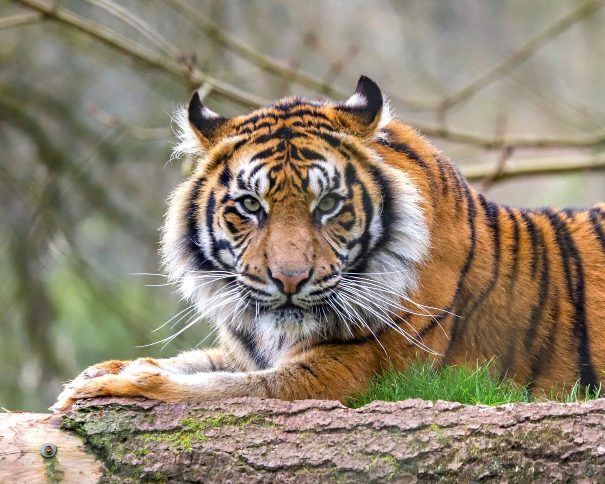

TIGER
Tigers are typical felines and like to conserve energy, so they sleep for up to 18 hours a day!
Chuffing, snarling, hissing and growling are all vocalisations
used by Sumatran tigers to communicate.
This species’ stripes are closer together on a darker orange fur than other
tiger subspecies like the Amur or Bengal tiger.
This stripe marking is said to assist the Sumatran tiger in camouflaging better in their forest habitat.
After a gestation period of around 100 days, a
female tiger gives birth to a litter of one to six cubs.
WHERE WILL YOU FIND THEM?
You will find the tiger cage at GO19.